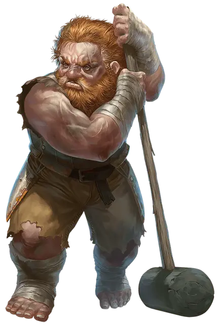

Разорённый
Ruined

Всё шло так хорошо! У вас была жизнь, полная роскоши, любви и комфорта, но вдруг вы все это потеряли. Возможно, вас обвинили в преступлениях, которых вы не совершали, и вы потеряли свою репутацию, состояние и карьеру. Возможно, разъярённый дракон или другое чудовище уничтожили всё, что у вас было, за один злополучный день. Или вы, возможно, искали колоду многих вещей [deck of many things], надеясь сделать свою успешную жизнь ещё более славной, но вытянули разрушительную карту, которая навсегда изменила вашу судьбу.
Ваше отчаяние привело вас к карьере искателя приключений. Вы не ищете тёмных подземелий и их чудовищных обитателей ради азарта и славы; вы делаете это, потому что все остальные пути для вас закрыты. Но однажды вы уже поднимались высоко на колесе фортуны, и, при наличии удачи и силы духа, вы сможете сделать это снова.
Владение навыками: Выживание, Скрытность
Языки: один на ваш выбор
Владение инструментами: один игровой набор на ваш выбор (например, игральные карты или ставка трёх драконов).
Снаряжение: треснувшие песочные часы, комплект ржавых наручников, полупустая бутылка, охотничья ловушка, игровой набор (соответствующий выбранному вами владению), комплект дорожной одежды и кошель с 13 зм
Умение: Я обязательно выживу
Вы пережили разрушительное несчастье и обладаете скрытыми резервами, которых другие не ожидают. Вы получаете черту Бдительный, Одарённый или Крепкий (на ваш выбор). Ваш выбор черты отражает то, как вы справились с ужасной утратой, навсегда изменившей вашу жизнь. Если вы сохранили остроту чувств, цепляетесь за любую возможность и сумели выбраться из страданий, воспользовавшись малейшей надеждой, выберите Бдительный. Если вы удвоили свои усилия, чтобы вернуть то, что когда-то было вашим, выберите Одарённый. Если вы стоически пережили свое несчастье, выберите Крепкий.
Создание разорённого персонажа
Разорённые персонажи были на вершине мира до того, как случилось несчастье. Многие были богаты. Другие происходят из скромного происхождения, но их окружали друзья, семья и близкие. Они могли быть знаменитыми или просто никогда раньше не сталкивались с серьезными трудностями. Некоторые были рождены с привилегиями или добились известности благодаря обману или ложной репутации. Теперь колода многих вещей [deck of many things] или другое бедствие разрушило их, как карточный домик.
Если жизнь вашего персонажа была испорчена колодой многих вещей [deck of many things], подумайте, какая карта виновата. Возможно, ваш персонаж на долгие годы был заточен картой Тюрьмы или Пустоты, и теперь все, кого он знал, умерли. Возможно, ваш персонаж вытащил карту Плута, и самый близкий ему человек — супруг, ребёнок или родитель — восстал против него. Дьявол, выпущенный на волю картой Огонь, мог разрушить их жизнь. Карта Руины или Когти могла украсть материальные блага персонажа или обременить его огромными долгами.
Рекомендуемые характеристики. Подъем над неудачами формирует мировоззрение. Таблица «Черты характера разорённого» предлагает черты, которые вы можете перенять для своего персонажа (и разрушительные карты, которые могли продиктовать появление черты).
Черты характера разорённого
| к6 | Черта характера |
| 1 | Я изменился по сравнению со своим прошлым и работаю над тем, чтобы соответствовать своему новому пути. (Равновесие, Трон) |
| 2 | Каждый момент — это дар, который я отказываюсь тратить зря. (Эвриала, Череп) |
| 3 | Теперь, когда я преодолел убожество, я могу пережить что угодно. (Дурак, Руины, Когти) |
| 4 | Я знаю, что против меня действуют враги и всегда готовлюсь к худшему. (Пламя, Плут) |
| 5 | Я интерпретирую каждое событие как часть более крупной закономерности, которую ещё не осознал. (Пазл, Звезда) |
| 6 | Я должен наверстать упущенное время. (Тюрьма, Пустота) |
Безделушки разорённого. Когда вы создаете своего персонажа, вы можете один раз бросить кубик по таблице «Безделушки разорённого», а не по таблице «Безделушки» в «Книге игрока».
| к6 | Безделушка |
| 1 | Ржавый обрывок некогда любимой семейной реликвии. |
| 2 | Документ на землю, но все имена и отметки, которые когда-то связывали его с вами, растворились в безвестности. |
| 3 | Безделушка, когда-то наделенная могущественной магией. |
| 4 | Потрепанная игральная карта с проколотой дыркой, на лицевой стороне которой изображена карта, которая на вас повлияла. |
| 5 | Пожелтевший зуб Гуманоида, который устрашающе шепчет, если его положить под подушку. |
| 6 | Подарок на память от человека, с которым вы когда-то были близки, но который теперь стал вашим врагом. |